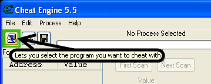

Gamehack tutorials
| This entry needs a lot of work. Please contribute if you can. Check this page to see if there are some suggestions for adding to Gamehack tutorials. |
Contents
How do I set Cheat Engine 5.5 to my game?
First of all, click the nice computer button in the left top corner of Cheat Engine.

When you clicked this button you can select a process. Look for your game in the list. If the name is not in there, try looking for game.exe. When you selected your game successfully, "No Process Selected" in the middle changes to your game process.
{kind=link}
How do I use my Cheat Engine?

Here you can see the top half of Cheat Engine. I will now tell you what most of it is for.
1. Here you enter the value you want to search for. You can search for anything, like health and score.
2. Scan values. You can search for different kinds of values here, such as Exact Value, Smaller or Bigger than, Value Between, and Unknown Initial value. The exact value gives you the option to find exactly what you enter. Smaller and bigger than searches for smaller or bigger numbers, so not the entered value included. Unknown initial value is if you don't know what it's yet but you do know it's there. If it's the second search, you can select more. On the second search, you can search for increased or decreased value, for if the value has decreased or increased. Another one is changed value, for if the value has changed, but you don't know what it is. Unchanged value is for if the value is the same as the previous scan. And last, the search for if it's the same as the first scan. Which is quite obvious of what it does.
3. Here you can search for binary, (Single, 2, 4, 8) bytes, binary, float, double, Text, and Array of Bytes.
4. The settings. They actually do exactly as they state they do.
5. The place where the search results will appear.
6. Speedhack, this hack is used to make your game go faster or slower.
7. The search buttons. The buttons will change according to your search numbers.
More on memory scanning and some of these functions can be found at Memory Scanning.
Where do I find tutorials for hacking?
We have a section on the forum for hacking with Cheat Engine. You can find that here.
Godmode
This is the most known hack for any available game. This hack usually prevents you, or your characters from dying, or losing health. This hack can be there in multiple forms. For example:
- Invulnerability by unable to lose health.
- Invulnerability by being unable to die.
- Invulnerability by being unable to be hit.
x0r's tutorial on how to find GodMode.
Some games use the same routine for health for the AI as for the player. So simply removing it won't work.In those cases you have to write a script that checks if the object whose health is being decreased belongs to the player or to the AI
In a lot of fps games, you can look at the base class pointer of the object, which is usually the first 4 bytes of the player class/structure. That contains a pointer to a static location (static as in, it can be written as modulename+offset) , in your script you can then check if that value equals the static address it should be, and if so, do not decrease health, else decrease health, or in case of a 1 hit kill cheat, set health to 0
In other games like strategy games where there's not a big distinction between your units and that of the enemy you'll have to find some other kind of identifier. Perhaps the class structure contains a playerid, or a pointer to the controller. In those cases it's best to do multiple code injections. One at a spot to find the player's playerid, or controller pointer (usually gui related code) and at the location where health is decreased. Then at decrease health check if the playerid or playerpointer has been found, and if so, compare, and allow/deny. One tool that can be useful to find the playerid or playerpointer in the class structure of a unit, is the data dissector
---
Another method of godmode that works in a few games when they use floating point values, is setting the health to such a high value it turns to INF+ , this means infinite and normal increase and decrease won't effect if anymore. Note: This doesn't work in all games or you'll get bad graphical glitches like healthbars going over the whole screen.
Besides setting health to infinite there is an alternate method, change the health value from float to 4 byte and change the value to $ffffffff , this triggers a bug in some games making a readout of the health show 0, but compares if it's 0 return false. It also blocks increase and decrease of that value making it stay that way forever. This is a usefull method for godmode in some games like Command and Conquer. Of course as usual with using values a game wasn't expecting, it can cause crashes in some games under certain situation (like warhammer 40000 when setting the health of a leader to that)